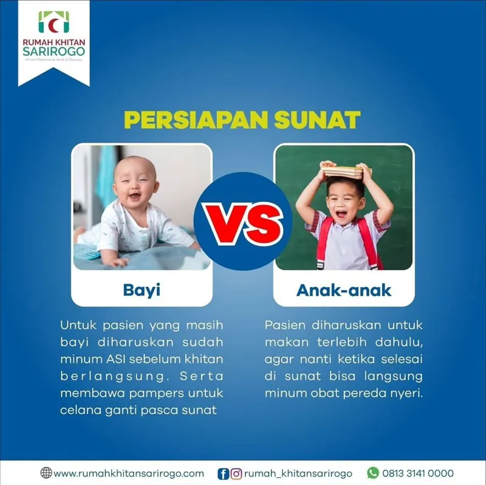
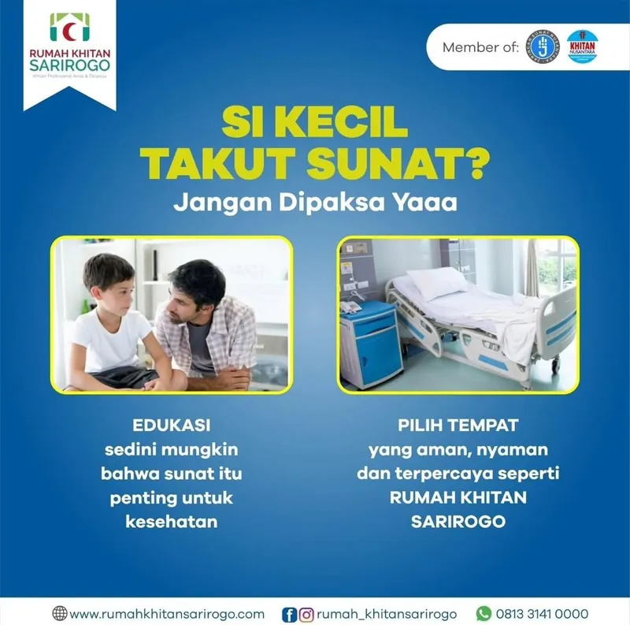
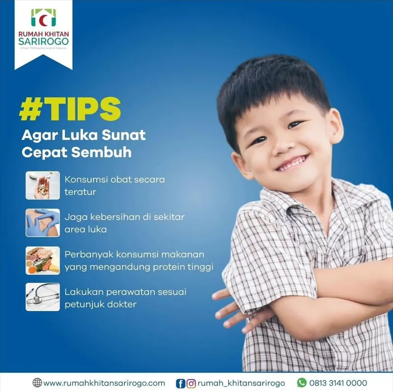

Informasi Layanan Khitan
Setiap layanan dapat ditanyakan langsung kepada tim kami. Harga dan jadwal disampaikan melalui WhatsApp.
Khitan Bayi
Layanan khitan untuk bayi dengan pendampingan orang tua dan penjelasan perawatan yang jelas.
Tanyakan LayananKhitan Anak
Layanan khitan untuk anak dengan suasana yang ramah dan penjelasan sesuai usia anak.
Tanyakan LayananKhitan Dewasa
Layanan khitan untuk remaja dan dewasa dengan konsultasi awal yang menyeluruh.
Tanyakan LayananKhitan Revisi
Konsultasi dan layanan perbaikan bagi yang pernah khitan dan memerlukan tindak lanjut.
Tanyakan LayananKhitan Anak Berkebutuhan Khusus
Pendekatan khusus dengan waktu dan kenyamanan anak sebagai prioritas.
Tanyakan LayananKhitan Anak Gemuk
Konsultasi awal untuk memastikan layanan dan metode yang paling sesuai.
Tanyakan LayananInformasi seputar khitan


Anak Takut Disunat?
Jangan dipaksa. Pahami perasaan anak dan pilih tempat yang nyaman.
Tanyakan ke Klinik
Tips Merawat Luka Khitan
Panduan singkat merawat luka. Konsultasikan kondisi anak ke klinik.
Tanyakan ke KlinikPertanyaan yang sering ditanyakan
Tidak menemukan jawaban yang Anda cari? Tanyakan langsung kepada kami.
Tanya via WhatsAppDi mana lokasi Rumah Khitan Sarirogo?
Kami berlokasi di Perum Taman Puspa No.1 Blok D1, RT.21/RW.05, Sari Rogo, Kec. Sidoarjo, Kabupaten Sidoarjo, Jawa Timur 61234. Anda juga bisa membuka Google Maps.
Bagaimana cara menghubungi klinik?
Hubungi kami melalui WhatsApp di 0813-3141-0000 atau gunakan tombol konsultasi di situs ini.
Bagaimana cara menanyakan jadwal khitan?
Kirim pesan melalui WhatsApp dengan menyebutkan nama anak, usia, dan layanan yang diinginkan. Tim klinik akan membalas.
Apakah orang tua bisa berkonsultasi terlebih dahulu?
Ya. Silakan hubungi klinik melalui WhatsApp untuk berkonsultasi sebelum memutuskan.
Apa saja fasilitas yang tersedia?
Klinik memiliki ruang tindakan dan area tunggu yang bersih dan tertata. Untuk informasi lengkap, tanyakan melalui WhatsApp.
Bagaimana cara mengetahui layanan dan metode khitan yang tersedia?
Informasi layanan dan metode yang tersedia dijelaskan langsung oleh tim klinik. Tanyakan melalui WhatsApp.
Bagaimana mendapatkan informasi perawatan setelah khitan?
Tim klinik akan memberikan penjelasan perawatan. Jika ada keluhan setelah khitan, segera hubungi klinik atau dokter.